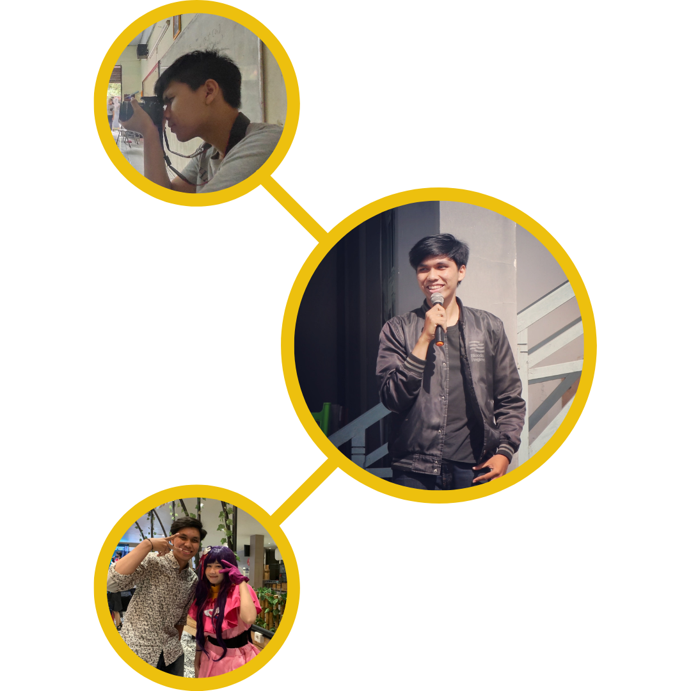

ABOUT ME
Hello, welcome to my personal website for the first time. Allow me to introduce myself;
I'm Samuel Sinulingga, but you can call me Sam. I am a student at the State Polytechnic
of Jakarta, majoring in Broadband Multimedia in the Electrical Engineering department. It
might seem a bit different from my interests, right? Nevertheless, I've primarily been
studying telecommunications there. But, of course, I've also delved into web development and mobile
development, which have been among my passions. Even though I could have pursued a different major,
such as informatics or product development, I remain enthusiastic about my studies to make my parents
proud of my college graduate.
I've had a keen interest in design since I was a child. From a young age, I was captivated by the
first anime I ever watched, Naruto. While watching that anime, I developed a deep fascination for
other anime series, and I still enjoy watching anime today. In addition to anime, I also love playing
both PC and mobile games, ranging from AAA titles to online games. Through all my hobbies, I began gradually
trying to understand how the design of anime and games is created to be so captivating. To this day, I continue
to pursue this passion and hope to become an animator or game designer in the future if the opportunity arises.
As I've grown older, I've started to explore other design disciplines, such as website design and mobile app design.
Through this exploration, I became acquainted with various job roles that I had never heard of before, such as UI Designer,
UX Designer, UX Researcher, UX Writer, UX Engineer, Graphic Designer, Website Designer, and Front-End Web Developer. It was from
there that I began learning, and now, I've finally created this website to showcase some of my work. That's the story of me in a
nutshell, and I hope it helps you understand my passion in this field better.
That's it folks, I hope you have a wonderful day,
Warm regards from me, Samuel Sinulingga.

Want to know me more? Feel free to contact me!!
Contact_Me